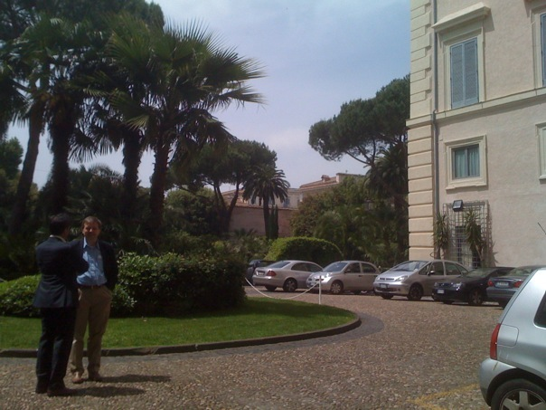

The conceptual foundations and the economics network neutrality [Part 2] - 14 May 2009, Rome
This is the second part of my recap of the nnsquad.it convention held in Rome on May 14, 2009, and hosted by the ICT consultants foundation Fondazione Ugo Bordoni.
In the first part I described the morning session, dedicated to the definition of Network neutrality, and how global economics can cope with it. The afternoon was dedicated to more technical talks, and I had the occasion to hear telcos spokesmen remarks over the current situation and possible future developments.

The first speech started at 2.15PM and was held by Prof. Vittorio Trecordi (slides available here). He introduced it by stating that net neutrality could possibly contrast with the economic development and security assessment, because of the wiretapping needed for the latter, tap that is strongly against [ .. ]
The conceptual foundations and the economics network neutrality [Part 1] - 14 May 2009, Rome
http://www.fub.it/events/seminari/neutralitadellareteeaspettisocioeconomici
Neutrality – “Economy is dematerializing”
Solicited by a Facebook message sent to all the members of the nnsquad.it – for a neutral Internet members on 6 May 2009, I stumbled upon this interesting event I had the occasion to participate, held in the 17th century Rospigliosi palace in the heart of Rome.

In this photo: Kenneth Carter and Stefano Quintarelli
The preface looked pretty good: professors, Ph.Ds, telco spokesmen and politicians speaking about the internet, its inborn freedom, and how to cope with this in a society where security measures are constantly increasing, and as such contrast in a virtual world with no barriers whatsoever. Furthermore, it’s a virtual arena in which everything can be free, not only information, and people is becoming accustomed to it [ .. ]
Facebook Developer Garage 2009, Milan (Italy)

This is my recap of the first italian facebook developer garage, held in milan on April 23, 2009, and hosted by mikamai. The morning has been dedicated to developer sessions, the afternoon to marketing & communication ones. Some videos of the event are available here.
Morning: developer session
The first talk was held by James Leszczenski, facebook engineer, who presented the connect platform vision, mission, and values. interesting, besides the talk, for user participation: the audience was deeply interested about which information they get from facebook, how should they handle it, and which means connect does provide to match identities and find friends on an enabled web site.
Later I had the occasion to ask James about whether FB was inclined or not to adopt OpenID as an authentication method: [ ... ]
A tweeting (geeky) parrot
I’m searching for a new pet. We already have two lovely cats, but after feeling how alive an house can be with many pets (after a beautiful night @ il quadrato mansion), I’m thinking about having another one to grow and love.
But, what kind of geek am I, if I don’t add a nerdy bit to it? So, after the brain twitter interface about which we talked about so much in the last days, this evening a quite random funny thought has stumbled into my mind: what about getting a grey parrot, grow it, learn it to talk, and letting him .. well, tweet his words using a speech recognition system put right aside its bar and linked to a twitter account? How weird would be that?! :D
Thinking deeply, the weirdest thing is that in 2009, a tweeting parrot makes me think about a “parrot with access to twitter” .. and not a bird emitting its natural verse. Am I overloaded by this social media thingie? Should I take some vacation?
I guess. But not right now. The first italian facebook developer garage is right two days away..
:)
Notice to all employees
( As read on full-disclosure )
Subject: Notice to all employees
Date: Tue, 24 Feb 2009 13:06:14 -0500
Dear employees,
Due to the current financial situation caused by the slowdown
of the economy, Management has decided to implement a scheme
to put workers of 40 years of age and above on early retirement.
This scheme will be known as RAPE (Retire Aged People Early).
Persons selected to be RAPED can apply to management to be eligible
for the SHAFT scheme (Special Help After Forced Termination).
Persons who have been RAPED and SHAFTED will be reviewed under the
SCREW programme (Scheme Covering Retired Early Workers). A person
may be RAPED once, SHAFTED twice and SCREWED as many times as
Management deems appropriate.
Persons who have been RAPED can only get AIDS (Additional Income
for Dependants & Spouse) or HERPES (Half Eamings for Retired
Personnel Early Severance).
Obviously persons who have AIDS or HERPES will not be SHAFTED or
SCREWED any further by Management.
Persons who are not RAPED and are staying on will receive as much
SHIT (Special High Intensity Training) as possible. Management
has always prided itself on the amount of SHIT it gives employees.
Should you feel that you do not receive enough SHIT, please bring
to the attention of your Supervisor. They have been trained to
give you all the SHIT you can handle.
Sincerely,
The Management
( I hope you enjoyed this :) There is also an USAF version from 1997 ).
Implementing an image gallery using facebox and will_paginate
On VisitaCSA we’re using defunkt’s facebox to show places images at large. Facebox is a great general-purpose lightbox, because it is fast, stable, is based on jQuery and has got a really clean API.
But we needed more than a simple display lightbox, because we wanted our users to navigate easily between all images, possibly without modifying facebox at all. The solution turned out to be pretty simple, thanks also to the will_paginate plugin we were already using. It all burns out to have:
- A Photo model, instrumented with the
has_attachmentmethod - Resource routes for photos (
map.resources :photos, :only => :showinconfig/routes.rb) - A
showcontroller method in thePhotosControllerthat calls.paginatewith a:per_pageargument of 1 - An HTML view for the photo resource, that has pagination controls using the
will_paginatehelper - Some jQuery code hooks onto the pagination links and make the browser load via AJAX the next photo directly into the facebox.
The obfuscated blinking border
This is the obfuscated piece of Javascript code that implements the red border and loads Google Analytics on the Segmentation Fault site :
77 <script type="text/javascript">// <![CDATA[
78 var theLoadSequenceToRunAfterTheDocumentHasBeenLoaded = function() {
79
80 // The blinking border
81 //
82 (function(t){// (C) 2009 vjt <segmentation-fault@core-dumped.info>
83 var $=function(_){return(document.getElementById(_));};var ee =[
84 $('n'),$('s'),$('w'),$('e')],e,_=true;setInterval(function(){for
85 (var i=ee.length;i&&(e=ee[--i]) ;_) {e.className=e.className?'':
86 'b';}},t*08); /* .oOo.oOo.oOo. ^^^^^ -*** * *** *** *******- **/
87 })((4 + 8 + 15 + 16 + 23 + 42) * Math.PI / Math.E + 42/*166.81*/);
88
89 // Google analytics
90 //
91 try{var pt=_gat._getTracker("UA-1123581-3"); pt._trackPageview();}
92 catch($aMarvellousErrorThatWontBeDisplayedOnTheUserBrowserAtAll){}
93
94 }// end of theLoadSequenceToRunAfterTheDocumentHasBeenLoaded routine
95 //]]></script>
To me, it looks like a contrived melody, or complicated poetry. It’s evil engineering, I know. But when I was writing it, I felt exactly the same I did while writing verses with rhymes. _why’s words are absolutely pertinent here: “until programmers stop acting like obfuscation is morally hazardous, they’re not artists, just kids who don’t want their food to touch.”.
You can view the code with syntax hilighting on github, or with the “View source” function of your browser while you’re on the segfault site. :)
How to mirror a static copy of the opensource.org website
I currently maintain the italian mirror of the Open Source Initiative web site, and today I realized that the script I wrote some months ago wasn’t doing its job well.. because the CSS files weren’t downloaded at all, causing a rather unpleasant rendering of the site.
To mirror opensource org I’m currently using the plain’ol GNU Wget -r—mirror and so on. While the good’ol wget downloads each page prerequisite defined in the HTML source, it doesn’t support @import CSS rules, and doesn’t download images referenced in CSS with url() rules.
BTW, nothing that can’t be resolved with some regex-fu: that’s why I’m sharing the script I’m currently using to mirror the opensource.org web site, hoping it will generate either a new mirror or some insights on how to do this job better :).
The script: update_opensource_mirror.sh
Enjoy! :)